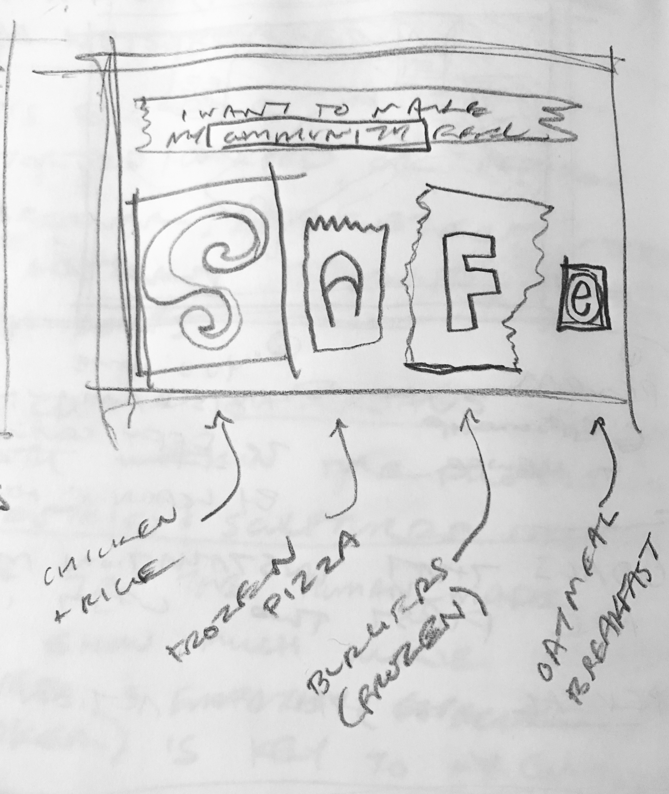
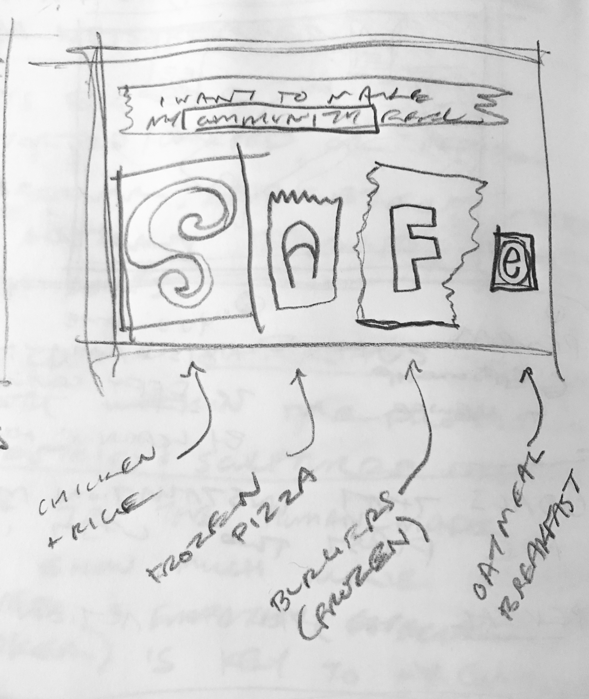

Symbiotic Mask
Aromatic Mask
Breathing Futures
Consumables for Consideration
Sterile Packaging Compliant
My Virtual barber
Consumables for Consideration.
PROBLEM
Part 1: Designers and other creative practitioners are unsure of how to use their skills and limited resources now that we are faced with the coronavirus. There is a desire to thoughtfully address issues and feelings caused by the pandemic through creative practice, but no consensus on how to do so. They are uncertain of how to appropriately express their own perspective, and also want to find a way to use their skills to benefit others.
Part 2: Restaurants, local markets, and other small businesses are closed for in-person services, causing people to stock up on goods and spend most time at home. People are unaware of how many local businesses need support wand which of them deliver.
BACKGROUND
One of the main ways people are communicating and sharing creative work during quarantine is on social media. Creative people who share work and express themselves on social media have an opportunity to do so in ways that enact social change.
INSPIRATION
The main source of inspiration for this project was a project by the Pittsburgh artist Lenka Clayton. She sent a letter to hundreds of art museum curators all over the world, asking them about how they define art and decide what belongs in a museum collection. I wanted to do a similar thing with a personal network of creatives, while also incorporating the goal of supporting local business.
I'm also drawing from my own experience using social media and seeing people nominate each other for different participatory challenges. Also having used various media to express myself and my ideas, often repurposing found materials.
SOLUTION
This challenge is a series of small activities that get people thinking about how they want to take care of others as designers in this turbulent social climate, and also to get them thinking about how they are taking care of themselves. The idea is to engage them in a short, freeform creative activity that first helps get their "creative juices flowing". Then, the goal is to have the activity prompt inner reflection, and also spur conversation between people (connected on social media) about themselves and the how the pandemic has affected the community.
PROCESS
Step 1: Pose questions to maker and allow for initial reflection. Example: How do you want to affect people, your community, or local businesses through design? Or: How do I want to make people feel through my creative practice? The idea here is to land on a key word, such as happy, amused, interested, curious, motivated, informed, secure, etc. (Answers should be one word or a short phrase)
Step 2: Gather content from typography from product packaging you have used this week while in quarantine. Arrange the letters to spell out your answer to Step 1. Next, identify where the final letters came from (in photo or in written caption).
Step 3: Share creation and start dialogue about how these same services could come from small businesses or local vendors. Also ask about what people are doing to make themselves feel the word you chose.
Step 4: Redesign and recreate your collage. Revise your word or phrase through making and do a "refined" version. This is the maker's chance to explore their creative practice more specifically. The idea here is to take both the feedback/conversations/reflections from the previous post and one's personal design/making skills into account now. For example, a woodworker could do carved renditions of the letterforms they chose, while an illustrator could opt for an exciting graphic illustration.
Step 5: Share and talk about this new piece over media as well, then nominate someone else to do the challenge.
matthew mcgehee
Final.
Process.
 
